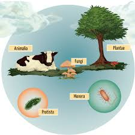
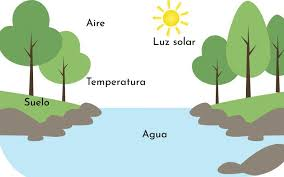

Elementos del medio ambiente
Los elementos del medio ambiente son todos los factores que conforman el entorno donde vivimos. Estos elementos se pueden agrupar en tres grandes categorías: bióticos, abióticos y sociales. Comprenderlos ayuda a cuidar mejor la naturaleza y a tomar decisiones más responsables.



Videos recomendados
Tipos de elementos bióticos
Dentro de los elementos bióticos hay tres grupos principales:
- Productores: como las plantas y algas, producen su propio alimento con luz solar.
- Consumidores: animales que comen plantas u otros animales (herbívoros, carnívoros y omnívoros).
- Descomponedores: hongos, bacterias y lombrices que ayudan a descomponer materia orgánica y devolver nutrientes al suelo.
Relaciones entre los elementos
Los elementos del medio ambiente interactúan constantemente. Algunos ejemplos:
- Una planta usa agua, aire y luz solar para crecer.
- Un conejo come pasto y el zorro come al conejo.
- Los descomponedores transforman hojas y restos en nutrientes para el suelo.
Estas relaciones forman ecosistemas estables si se mantienen en equilibrio.
Ejemplos concretos
Mira algunos ejemplos reales de cada tipo de elemento:
- Aire: vientos, oxígeno, monóxido de carbono.
- Agua: ríos, lagos, océanos y lluvia.
- Suelo: tierra fértil, arena y arcilla.
- Plantas: cactus, pasto, helechos y árboles frutales.
- Animales: aves, insectos, peces y mamíferos.
Actividades para practicar
- Identifica un ejemplo de elemento abiótico y uno biótico en tu barrio.
- Dibuja la cadena alimenticia de un ecosistema cercano (por ejemplo, parque o jardín).
- Escribe tres acciones que puedas hacer en casa para cuidar el agua y el aire.
Más videos recomendados
¿Por qué son importantes estos elementos?
Sin elementos bióticos no habría vida; sin elementos abióticos no habría condiciones adecuadas para vivir. El equilibrio entre todos ellos es clave para la salud del planeta y para nuestra propia supervivencia.